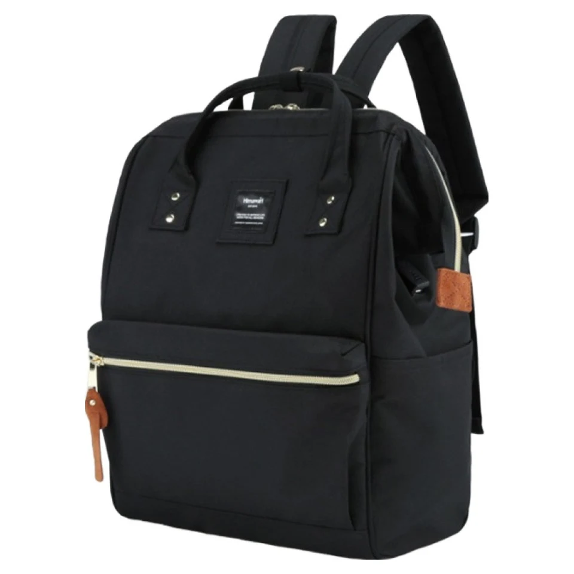

백팩 구매 후기 읽는 법: 별점보다 먼저 확인할 정보

별점은 여러 구매자의 평가를 빠르게 훑어보는 출발점입니다. 다만 “크다”, “편하다”, “잘 들어간다”는 말은 사용한 사람의 짐과 상황에 따라 뜻이 달라집니다. 후기를 제품 사양표처럼 읽기보다, 내 사용 조건과 비교할 수 있는 경험을 찾는 자료로 읽어보세요.
먼저 같은 가방에 대한 이야기인지
리뷰에 적힌 구매 상품명과 모델, 크기 구분, 색상을 먼저 확인합니다. 비슷한 번호라도 크기나 구성에 차이가 있을 수 있고, 같은 모델의 여러 색상 리뷰가 함께 보일 수도 있습니다. 사진 속 색상만으로 현재 고른 옵션을 판단하지 말고 구매 당시 옵션 표시와 현재 상세페이지를 나란히 확인하세요.
좋고 나쁨을 사용 조건으로 풀어 읽기
예를 들어 “생각보다 작다”는 표현만으로 크기를 결론 내리기 어렵습니다. 어떤 파일이나 파우치를 넣었는지, 짐을 얼마나 챙겼는지 같은 구체적인 설명이 있는지 찾아보세요. 반대로 “많이 들어간다”는 후기도 내 기기가 들어간다는 보장은 아닙니다. 필요한 실측값은 제품 안내나 문의로 확인해야 합니다.
사진으로 볼 수 있는 것과 없는 것
사진은 포켓 위치나 착용했을 때의 대략적인 비율을 이해하는 데 도움이 됩니다. 그러나 조명과 촬영 각도, 화면 설정에 따라 색과 크기의 인상이 달라질 수 있습니다. 한 장을 확대해서 소재 성능이나 장기간 내구성을 단정하지 말고, 상세 이미지와 서로 다른 구매자의 설명을 함께 살펴보세요.
출처와 날짜를 함께 확인하기
다른 판매 채널에서 가져온 리뷰라면 출처와 구매 당시 판매자를 확인합니다. 상품을 받은 직후의 이야기인지, 사용 기간을 밝힌 이야기인지도 구분해 보세요. 배송이나 상담에 대한 평가는 제품 구조에 대한 평가와 따로 읽는 편이 이해하기 쉽습니다. 체험단이나 무료 제공 안내가 있는 경우 그 조건도 함께 읽으세요.
마지막에는 남은 질문만 적어두기
높은 별점과 낮은 별점을 모두 읽고 반복되는 구체적인 내용이 있는지 살펴봅니다. 그다음 “내 파일이 들어가는가”, “선택한 옵션의 구성은 무엇인가”처럼 아직 확인하지 못한 질문을 정리하세요. 후기에서 답을 찾지 못했다면 비슷할 것이라고 넘기지 말고 상품 안내와 문의를 통해 확인하는 것이 구매 판단에 도움이 됩니다.
참고·안내
- Himawari No.9001 제품 정보
- 제품의 크기·구성·사용 방법은 구매할 옵션의 실제 안내를 확인하세요. 이 글은 개별 제품의 성능이나 구매자 경험을 보증하지 않습니다.
- Himawari No.9001 실제 제품 사진입니다. 특정 구매자의 리뷰 사진이 아닙니다.
자주 묻는 질문
리뷰 사진이 상품 설명 사진과 다르면 어떻게 하나요?
구매 당시 모델과 색상, 구성부터 확인하세요. 촬영 조건 때문인지 옵션 차이인지 사진만으로 단정하지 말고, 현재 구매하려는 상품 기준으로 문의해 확인하세요.
사진이 없는 별점 리뷰도 참고할 수 있나요?
전체 평가를 살펴보는 자료로 참고할 수 있습니다. 다만 구체적인 사용 경험을 알 수 없으므로 수납 크기나 소재 성능을 판단하는 근거로 대신하지는 마세요.